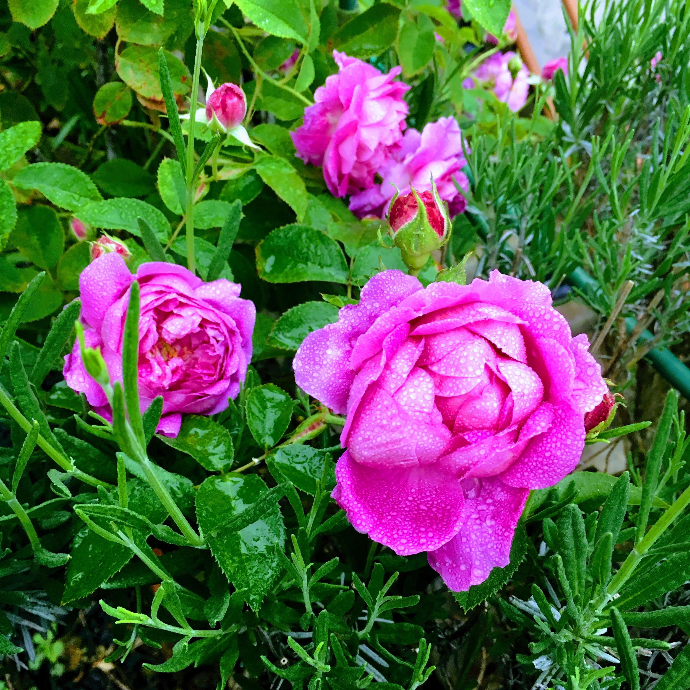
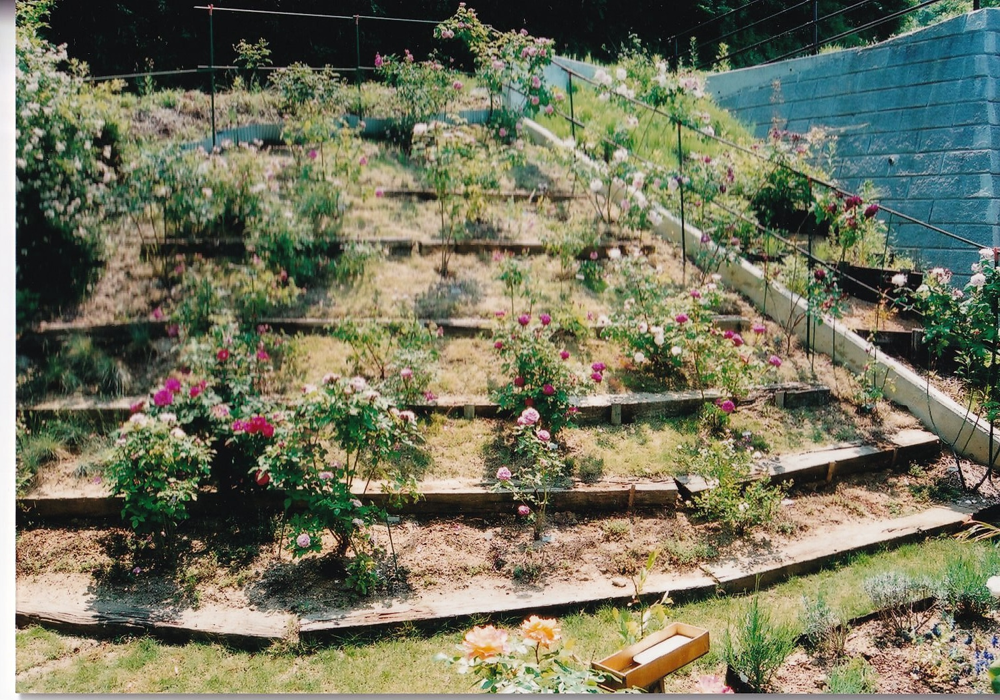
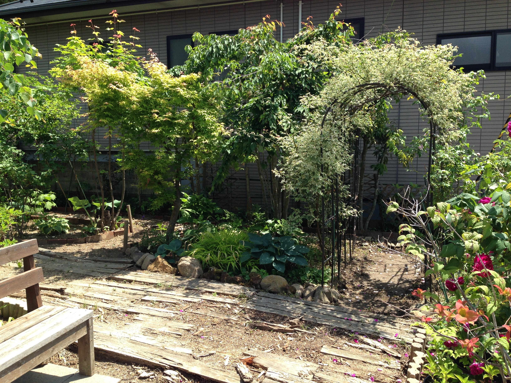
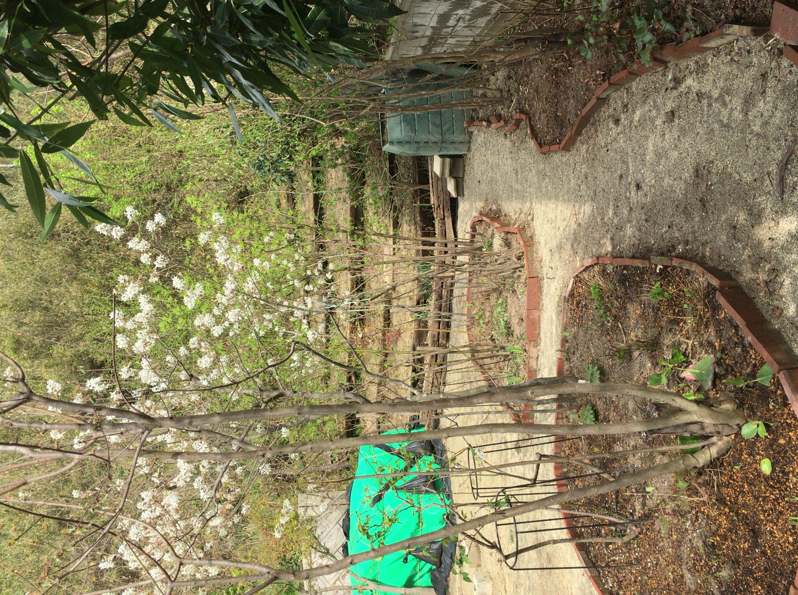
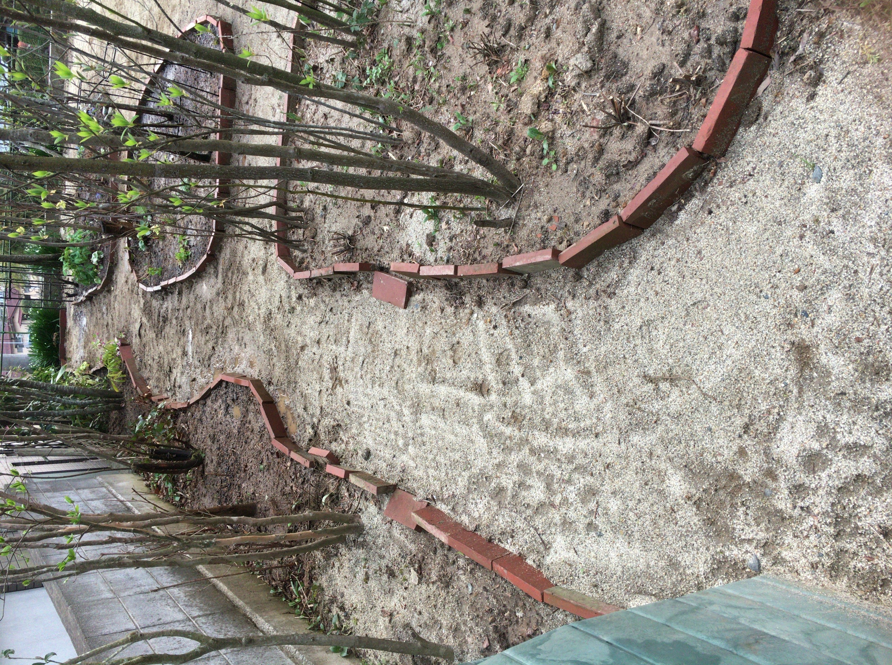
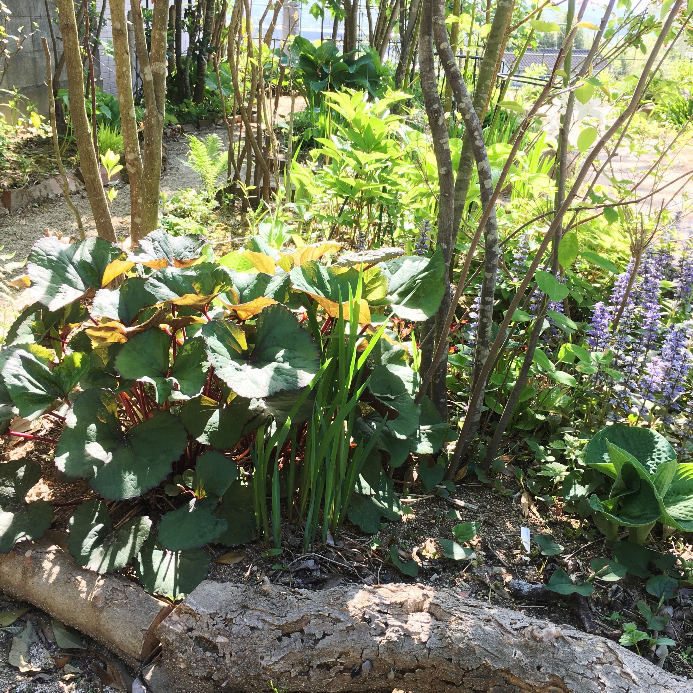

生い立ち
盆栽好きの父と山野草好きの母のもとに育ちました。父が挿し木から盆栽を仕立てる様子を、幼い頃からずっと観察していました。
植物との歩み
10代：観葉植物で部屋をジャングルに。
20代：叔父の農園でハーブに出会い、アパートの庭をジャングルに。
20代後半：原種バラと古典品種が加わり、ジャングル拡大。
休日になると、車で片道2時間半の「双葉ばら園」へ通いました。園主は私の薔薇師匠。私は園内の品種をラテン語表記でリスト化したり、時には苗販売のお手伝いもしていました。師匠と一緒に歩く広大な花園は、仕事の疲れをリセットできる大切な場所でした。

私が交配したバラ
地面との格闘
31歳で現在の地に家を建て、念願の「地面」を手に入れました。100鉢を超えるバラとともに、新しい暮らしが始まりました。粘土を掘り起こし、石を運び、傾斜地の階段を堆肥と一緒に上り下りする日々。手はマメだらけ、腰も痛みましたが、鉢から地面へ植物を移せる喜びが、すべてを上回っていました。
1999年

2002年
転換点
40代後半、体力が変化するにつれて、自営業と庭の手入れの両立に悩むようになりました。バラやハーブを少しずつ譲り、雑木や葉物へ植え替え始めた頃、東日本大震災が起きました。
ばら園のあった双葉町は、原発事故の影響で全町民が避難となり、園主もばら園を離れることになりました。私の住む福島市は線量が比較的低く、暮らし続けることはできましたが、仕事と生活で頭はいっぱい。窓越しに庭を見ているだけの時間が流れ、庭は次第に荒れていきました。

数年後、地域の除染が始まりました。私の庭も、表土と木道がすべて剥がされ、川砂が敷き詰められました。剥がした表土は庭の隅に積まれ、大きなシートで覆われたまま、長い間そこにありました。


殺風景になった庭とシートの山
毎日シートに覆われた土を見ているうちに、ある日、気持ちが急に動きました。猛烈に庭仕事をしたくなり、設計図を描き始めました。辛くなるバラを少しずつ譲り、雑木を植え、葉物を植え始めました。母と山野草店を巡り、父が盆栽から地植えに移した木も加わりました。

そして今、父が遺した木は大きく育ち、母の山野草は蔓延り、友人知人から継いだ植物たちも、それぞれの場所で育っています。この庭には、私の過去と、今と、この先があります。この先の時間を、移ろう庭と共に味わうこと。それが「庭仕舞いを愉しむ」という生き方です。
雑木の傍らに咲く白薔薇(2026年)
ひとりの庭
自宅兼店舗で自営業を営む私にとって、庭は唯一ひとりになれる場所。五感を自然に預けて、深く呼吸できる時間です。庭仕事に没頭していると、時間はあっという間に過ぎていきます。道具を洗いながら、もう次の休日を心待ちにしているのです。
 開拓時からの同志、フォークとシャベル
開拓時からの同志、フォークとシャベル
このサイトについて
還暦を迎えたことを機に、このWebサイトを作りました。
庭仕事は、いつまでも続けられるものではありません。両親の庭がそうであったように、私の庭にも、いつか終わりが訪れます。
それまでの記録として。継いできた植物たちの居場所として。このサイトを、少しずつ育てていきたいと思っています。